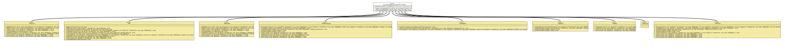

Module org.tquadrat.foundation.svg
Package org.tquadrat.foundation.svg
Interface AllowsGraphicalEventAttributes
- All Known Subinterfaces:
SVG,SVGGroup,SVGLine,SVGPath,SVGRectangle,SVGSymbol,SVGText,SVGTSpan,SVGUse
- All Known Implementing Classes:
SVGElementAdapter,SVGGenericElement,SVGGroupImpl,SVGImpl,SVGLineImpl,SVGPathImpl,SVGRectangleImpl,SVGSymbolImpl,SVGTextImpl,SVGTSpanImpl,SVGUseImpl
@ClassVersion(sourceVersion="$Id: AllowsGraphicalEventAttributes.java 820 2020-12-29 20:34:22Z tquadrat $")
@API(status=STABLE,
since="0.0.5")
public sealed interface AllowsGraphicalEventAttributes
permits SVG, SVGGroup, SVGLine, SVGPath, SVGRectangle, SVGSymbol, SVGTSpan, SVGText, SVGUse
{kind=link}
SVG elements that allow the graphical event attributes
"onactivate",
"onfocusin",
and
"onfocusout"
will implement this interface.
- Author:
- Thomas Thrien (thomas.thrien@tquadrat.org)
- Version:
- $Id: AllowsGraphicalEventAttributes.java 820 2020-12-29 20:34:22Z tquadrat $
- Since:
- 0.0.5
- UML Diagram
-

UML Diagram for "org.tquadrat.foundation.svg.AllowsGraphicalEventAttributes"
{kind=link}
-
Field Summary
FieldsModifier and TypeFieldDescriptionThe graphical event attributes. -
Method Summary
Modifier and TypeMethodDescriptionvoidsetActivationHandler(String value) Sets the activation handler for this SVG element.voidsetFocusInHandler(String value) Sets the focus-in handler for this SVG element.voidsetFocusOutHandler(String value) Sets the focus-out handler for this SVG element.
-
Field Details
-
GRAPHICALEVENT_ATTRIBUTES
The graphical event attributes.
-
-
Method Details
-
setActivationHandler
Sets the activation handler for this SVG element.- Parameters:
value- The activation handler.- See Also:
-
setFocusInHandler
Sets the focus-in handler for this SVG element.- Parameters:
value- The focus-in handler.- See Also:
-
setFocusOutHandler
Sets the focus-out handler for this SVG element.- Parameters:
value- The focus-out handler.- See Also:
-
{kind=link}
{kind=link}
{kind=link}
{kind=link}